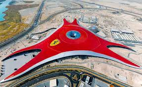
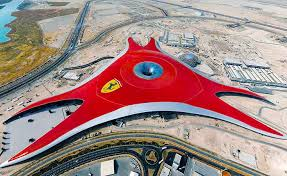
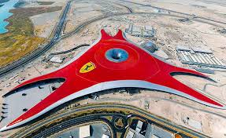

Галерея
 


Відвідайте нашу галерею, де зібрані найкращі фотографіі архітектури
Архітекту́ра — це одночасно наука і мистецтво проєктування будівель, а також власне система будівельних споруд, які формують просторове середовище для життя і діяльності людей відповідно до законів краси. На сучасному етапі розвитку людства архітектура становить одну з найважливіших частин засобів виробництва (промислова архітектура — будівництво заводів, фабрик, електростанцій тощо) та матеріальних засобів існування людського суспільства (громадянська архітектура — житлові будинки, громадські споруди та інше).
Функціональні, конструктивні та естетичні якості архітектури, а саме користь, міцність та краса, — тісно взаємопов'язані. Від конструкційного рішення багато в чому залежать і естетичність творів архітектури. Споруда не тільки повинна бути міцною, але і виглядати має міцною. Надлишок матеріалу навпаки викликає враження надмірної ваги. Зорова ж недостатність матеріалу, ототожнюється з нестійкістю, ненадійністю та викликає здебільшого негативні емоції. Функціональне призначення будівлі визначається її типом, залежно від якого обираються засоби створення певного художнього вигляду. Останній створюється за допомогою засобів архітектурної композиції. Серед її основних засобів архітектоніка, масштаб, пропорції та ритмічні відношення, пластика, фактура та кольори.

Відвідайте нашу галерею, де зібрані найкращі фотографіі архітектури